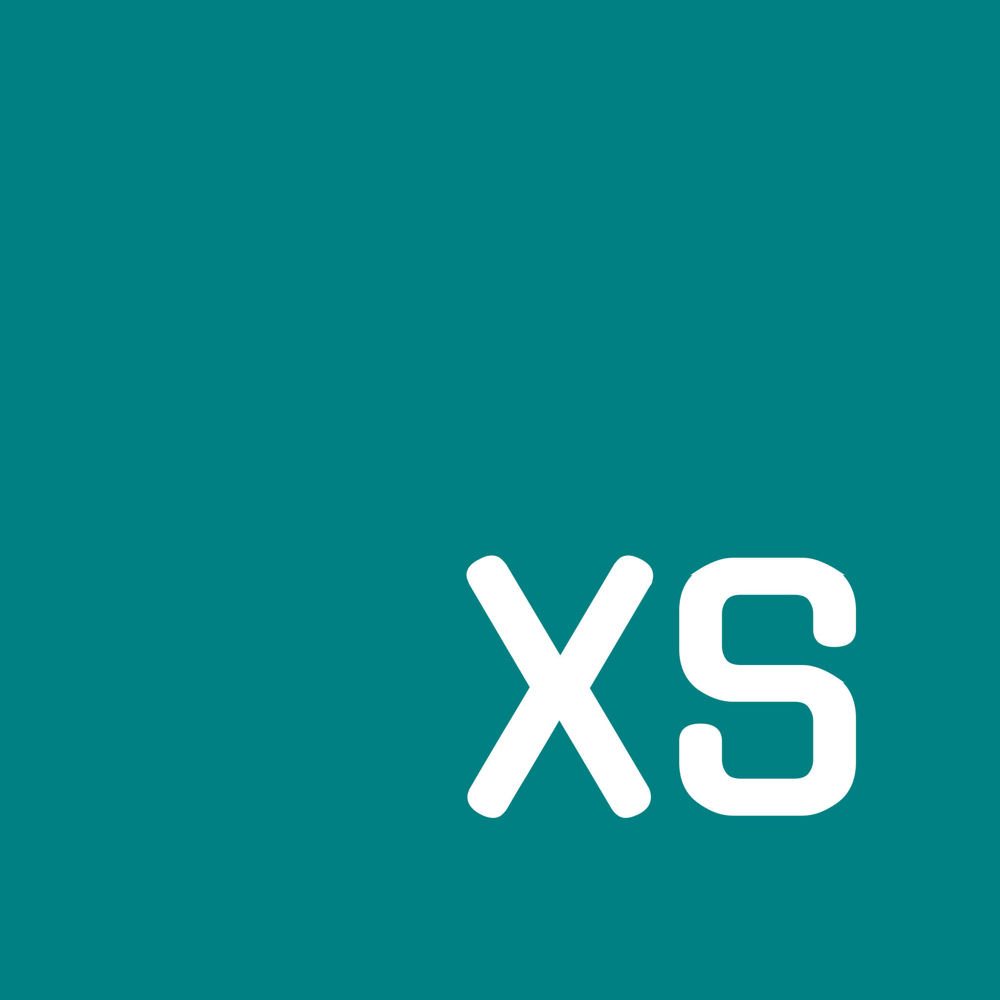

46 KB Footprint
Embedded directly into the single binary (models/nano.json). Zero Python runtime or heavy model weights required for core decision loops.

NioXS v0.4.2NioXS is the gateway and orchestration layer for Nio. NioFlow plans and hands work to focused model roles, NioNano supplies bounded local MicroLM workflows, and Rust keeps routing, tool contracts, and task state under control.
AXIS joins language-model reasoning with Rust-controlled routing and execution. Model names describe NioXS workflow roles; they are not claims of separately trained weights.
┌───────────────────────────────────────────────────────────────────┐
│ Nio / Coding Agent │
│ Chat · tools · approval · project boundary │
└──────────────────────────────┬────────────────────────────────────┘
│ OpenAI-compatible API (:7460)
▼
┌───────────────────────────────────────────────────────────────────┐
│ NioXS · Rust / AXIS │
│ │
│ NioFlow ── plan ──► Nano evidence ──► useful specialist stages │
│ │ │ │
│ └── Kilo: North Mini Code ──► StepFun when warranted │
│ └────────────► Auto Free on availability │
│ │
│ Typed tool relay · bounded handoffs · progress · final decision │
└───────────────────────────────────────────────────────────────────┘Runs on any machine with Node.js (Linux, macOS, Windows, Termux):
npx @nio-labs/nio-xscurl -fsSL https://raw.githubusercontent.com/nio-labs/nio-xs/main/install.sh | bashirm https://raw.githubusercontent.com/nio-labs/nio-xs/main/install.ps1 | iexNioXS exposes a standard OpenAI-compatible completions endpoint on http://127.0.0.1:7460/v1. You can auto-configure your current workspace or select your editor below:
# Auto-detect and configure all agents in the current project
nioxs initRun Aider directly against NioFlow, or write an .aider.conf.yml file:
aider --openai-api-base http://127.0.0.1:7460/v1 --openai-api-key none --model nio-flowOr in .aider.conf.yml:
openai-api-base: http://127.0.0.1:7460/v1
openai-api-key: none
model: openai/nio-flowIn Cursor: Navigate to Settings ➔ Models ➔ OpenAI API Key:
http://127.0.0.1:7460/v1none) if NIOXS_ALLOW_UNAUTHENTICATED=true, or your NIOXS_API_TOKEN.nio-flow.In Cline or Roo Code, select OpenAI Compatible provider in settings, or configure cline_mcp_settings.json:
{
"apiProvider": "openai",
"openAiBaseUrl": "http://127.0.0.1:7460/v1",
"openAiApiKey": "none",
"openAiModelId": "nio-flow"
}Auto-generate opencode.json using nioxs init --opencode or save:
{
"model": "nio-flow",
"apiBase": "http://127.0.0.1:7460/v1",
"apiKey": "none"
}Add NioXS to your ~/.continue/config.json under the models array:
{
"title": "NioXS (NioFlow)",
"provider": "openai",
"model": "nio-flow",
"apiBase": "http://127.0.0.1:7460/v1",
"apiKey": "none"
}Deploy NioXS as a dedicated team gateway or remote cloud proxy with instant 1-click templates:


docker run -d --name nioxs -p 7460:7460 -e NIOXS_ALLOW_UNAUTHENTICATED=true ghcr.io/nio-labs/nioxs:latestservices:
nioxs:
image: ghcr.io/nio-labs/nioxs:latest
ports:
- "7460:7460"
environment:
- PORT=7460
- NIOXS_ALLOW_UNAUTHENTICATED=true
volumes:
- nioxs_data:/root/.nioxs/data
volumes:
nioxs_data:| Variable | Default | Description |
|---|---|---|
PORT | 7460 | Binds to 0.0.0.0:$PORT on cloud hosts (Railway, Koyeb). |
NIOXS_LISTEN | 127.0.0.1:7460 | Explicit host:port binding string. |
NIOXS_API_TOKEN | None | Enforces HTTP Bearer token authentication. |
NIOXS_ALLOW_UNAUTHENTICATED | false | Set true to permit non-loopback connections without token files. |
NIOXS_DB_URL | http://127.0.0.1:7432 | Remote or external NioDB state store endpoint. |
NIOXS_DB_TOKEN | None | Client auth token for connecting to remote NioDB. |
Each profile represents a specialized operational workflow and role contract. Choose one directly in your agent's model picker, or let nio-flow orchestrate them automatically:
Default plan-first entry point. Decomposes coding goals, delegates to specialized profiles, and routes to Helm for final sign-off.
46 KB local CPU-native model. Runs <0.5ms intent triage, compiler diagnostic analysis, symbol search, and in-TUI directives.
Constructs code changes and builds verification pipelines. Emits structured patch contracts and sanity checks.
Deep code review and root-cause bug diagnosis. Audits actual project evidence against proposed mutations without hallucinated paths.
The final gatekeeper. Issues evidence-backed Go, Conditional Go, or No-Go decisions with specific blockers and criteria.
Deep reflection loop across three phases: Draft ➔ Challenge ➔ Refine. Tests assumptions and exposes blind spots.
Autonomous web & documentation investigator. Caches verified excerpts in NioDB with durable cryptographic evidence.
Creative brainstorming and architecture alternatives. Produces distinct, feasible prototypes before locking in an implementation.
NioNano is the core differentiator in AXIS. While large foundation models (LLMs) require gigabytes of VRAM, introduce latency, and risk hallucination, NioNano is a 46 KB deterministic learning model running natively inside the compiled Rust binary. It executes sub-millisecond local intent classification, verified evidence collection, compiler diagnostic triage, and anti-hallucination guardrails right in your developer terminal or TUI companion.
Embedded directly into the single binary (models/nano.json). Zero Python runtime or heavy model weights required for core decision loops.
Pure CPU-native computation with zero GPU or VRAM requirements. Evaluates feature weights and class priors in a fraction of a millisecond.
Calibrated Bayesian thresholds fail closed on ambiguity, ensuring commands and code modifications only proceed when grounded in project reality.
NioNano implements a trained Multinomial Naive Bayes classifier operating on tokenized n-grams and calibrated priors. Each incoming developer prompt is scored across 7 primary intent classes:
| Intent Label | Confidence Rule | Action Triggered |
|---|---|---|
read_file | High prob + path token | Extracts file slices and passes contents to agent context. |
inspect_project | High prob + project scope | Scans workspace structure and active language manifests. |
find_files | Pattern match + glob | Executes fast, bounded directory searches without LLM token cost. |
search_code | Symbol / regex token | Scans project symbols and AST references. |
run_checks | Build / test trigger | Runs detected build pipelines (cargo test, npm test, pytest, go test). |
clarify | Below margin threshold | Prompts the caller for missing parameters instead of guessing. |
unsupported | Fails safety / policy | Rejects unsafe requests cleanly before upstream routing. |
--bash, --test, --git, or --tools), NioNano parses and dispatches the action immediately in-session without waiting for an upstream cloud model round-trip.
--code! / --code guard):
Upstream generative models often invent nonexistent files or ghost API symbols. NioNano validates code proposals against local AST symbol trees across Rust, TypeScript, Python, and Go before writing diffs or executing mutations.
| Capability | NioNano (MicroLM) | Upstream LLM (e.g. Kilo / StepFun) |
|---|---|---|
| Binary / Weights Size | 46 KB (embedded) | 10 GB – 100+ GB (cloud hosted) |
| Execution Platform | Local CPU (Rust native) | GPU clusters / Cloud API |
| Inference Latency | < 0.5 ms | 800 ms – 5,000+ ms |
| Hardware Cost | $0 (runs on any laptop / Raspberry Pi / Termux) | API tokens / subscription costs |
| Hallucination Risk | Deterministic (0% ghost hallucination) | Probabilistic (requires external verification) |
| Primary Duty | Intent routing, symbol validation, evidence grounding | Deep semantic reasoning, synthesis, and creative generation |
Every turn processed by NioXS passes through an end-to-end, bounded lifecycle flow:
NioNano evaluates incoming input in <0.5ms. Directives (e.g. --bash, --test) execute locally without touching cloud models. General queries bypass project file scans.
Flow maps the objective into focused specialist roles. It preserves caller context and pins active turn constraints across handoffs.
Specialists generate patches (AtomContract), audit code changes (NeonReviewContract), or fetch documentation with BM25 lexical ranking.
Candidate modifications are checked against actual AST symbols in Rust, TypeScript, Python, and Go, refusing non-existent paths.
Helm evaluates the gathered evidence and returns an authoritative Go, Conditional Go, or No-Go verdict before relaying results to the caller.
Actions, turns, and evidence digests are immutably persisted in NioDB, enabling state rollback (nioxs undo) and audit histories (nioxs history).
NioFlow starts with Kilo North Mini Code. If it is unavailable, Flow falls back to Kilo Auto Free. When the task has multiple concrete signs of complexity, Flow checks the live Kilo /models catalog and can escalate to a free StepFun model that advertises tool support.
NioFlow · Planning
↪ NioAtom · Building
↪ Upstream: cohere/north-mini-code:free → stepfun/<catalog model> (high task complexity)
⚖ NioHelm · Go / No-GoNioXS can be operated as a native stdio Model Context Protocol (MCP) server, offering tools to Claude Desktop, Cursor, Cline, and any other MCP-compatible host:
nioxs mcpAdd NioXS to your claude_desktop_config.json:
{
"mcpServers": {
"nioxs": {
"command": "nioxs",
"args": ["mcp"]
}
}
}| Tool Name | Category | Description |
|---|---|---|
apply_patch | Workspace | Applies precise diff patches against project files. |
find_files | Navigation | Bounded file globbing across workspace root. |
search_code | Inspection | Regex and AST symbol searches. |
run_command | Execution | Runs shell commands with caller approval safety. |
web_fetch | Research | Headless web excerpt retrieval with BM25 ranking. |
scaffold | Generation | Creates initial project structures and templates. |
Directives allow developers to trigger instant in-TUI actions directly in conversation without exiting or minimizing the coding agent:
| Directive | Purpose | Behavior |
|---|---|---|
--no-helm <task> | Flow without Helm | Skips Flow's final Helm gate and lets the last specialist answer. |
--with-helm <task> | Thinker with Helm | Opts in to Helm after directly selected NioThinker. |
--code <request> | LLM Middleman | Hands the request upstream with caller tools when provided. |
--code guard <request> | AST Guard | Verifies generated code against Rust, TS, Python, and Go symbols. |
--find-files <glob> | Local Search | Asks Nano for a bounded project file listing. |
--bash <command> | In-TUI Terminal | Runs shell commands directly inside your coding agent conversation. |
--test [pattern] | Auto Test Runner | Detects test runner (cargo, npm, pytest, go test) and returns trimmed traces. |
--git / --git:status / --git:diff | Git Summary | Summarizes project git status and diffs. |
--tools <task> | Python Plugins | Dispatches specialized automation via installed companion plugins. |
--config <key> <on|off> | Session Options | Configures runtime session flags such as code or guard. |
NioXS supports dropping modular Python plugins into ~/.nioxs/plugins/ to extend coding agent capabilities with zero server recompilation.
.py file in ~/.nioxs/plugins/my_plugin.py.def run(prompt: str) -> str function.# ~/.nioxs/plugins/extract_colors.py
import re, json
def run(prompt: str) -> str:
"""Extracts hex color codes from text or CSS strings."""
hex_colors = re.findall(r'#(?:[0-9a-fA-F]{3}){1,2}\b', prompt)
return json.dumps({"colors": list(set(hex_colors))})We are improving the whole system in five measurable areas:
Read the AXIS plan for architecture, acceptance criteria, and evaluation status.
Rust owns orchestration, typed actions, and bounded workflows.
Specialists focus on a task and pass evidence forward.
Decisions depend on supplied files, tool outcomes, and stated criteria.
They are role profiles and Rust-controlled workflows that share the configured upstream model. NioNano has a local MicroLM component.
No. NioFlow routes general questions directly and only asks for project evidence when the task depends on the current project.
Helm reports Go, Conditional Go, or No-Go from evidence. The calling agent still enforces its approval policy before a tool runs.
Yes. Direct Thinker runs its bounded three phases without Helm by default. Add --with-helm when you want a final decision.
Unlike raw proxies, NioXS embeds NioNano (<0.5ms intent triage), Anti-Hallucination AST symbol validation, native web research, and cryptographic action logging in NioDB.
See the README, development guide, and API contracts.